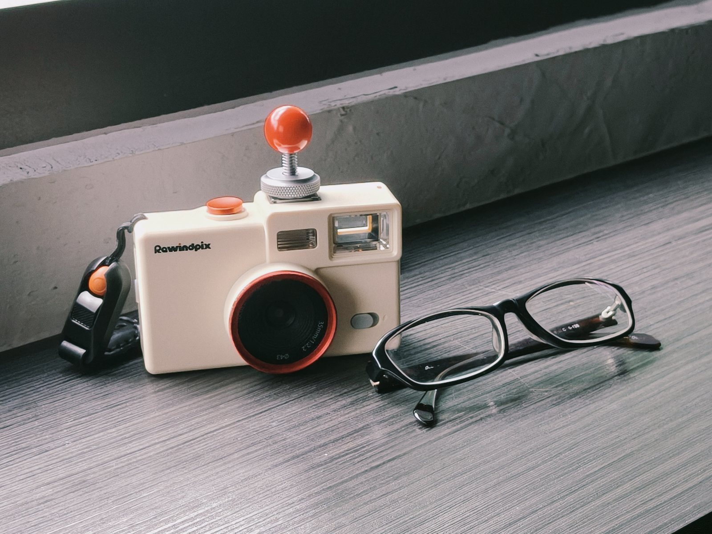

PHOTOGRAPHY · YABU
Rewindpix
Archive
讓光影慢慢浮現
Film Photography · Rewindpix
少一次預覽，多一次凝視。
反而更清楚自己拍了什麼——因為你記得。
— 雅布 重

Rewindpix PS135，一台沒有螢幕的相機。它給的不是方便，是把底片的拍攝手感放回手上。
下面的作品是我用它拍的。如果看完有點心動，歡迎用我的分潤連結把它帶回家：
這是分潤連結——你透過它購買，我會收到一點回饋。
Frames recorded on silver halide